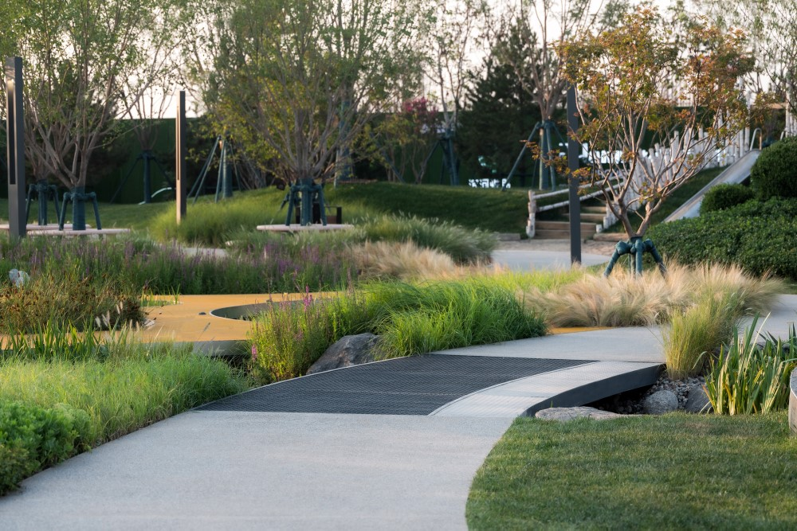
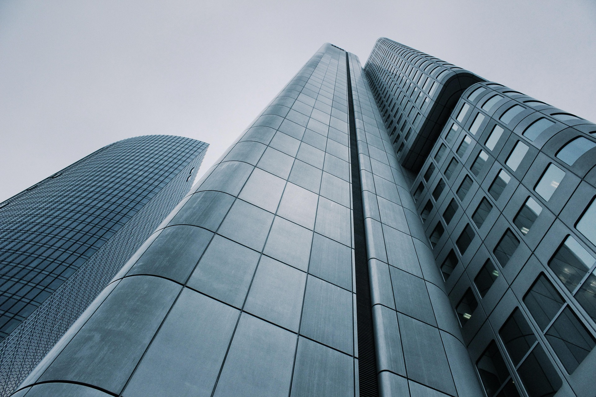
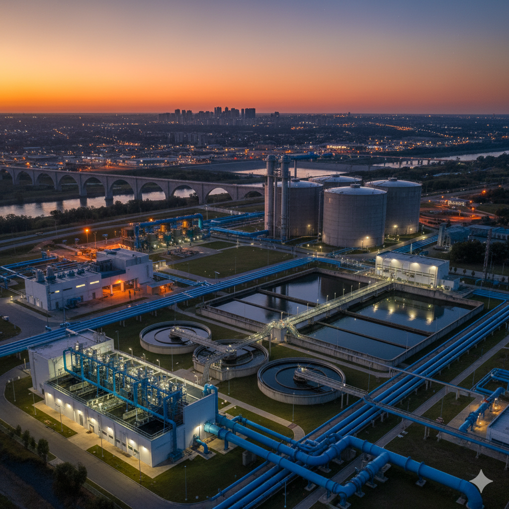
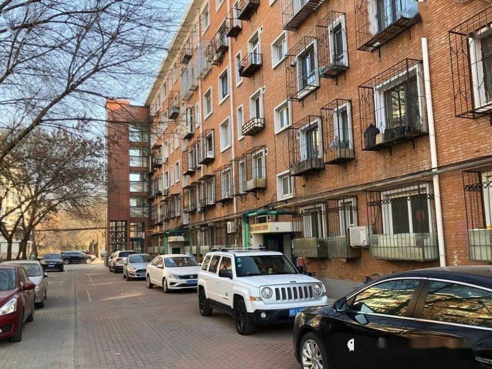
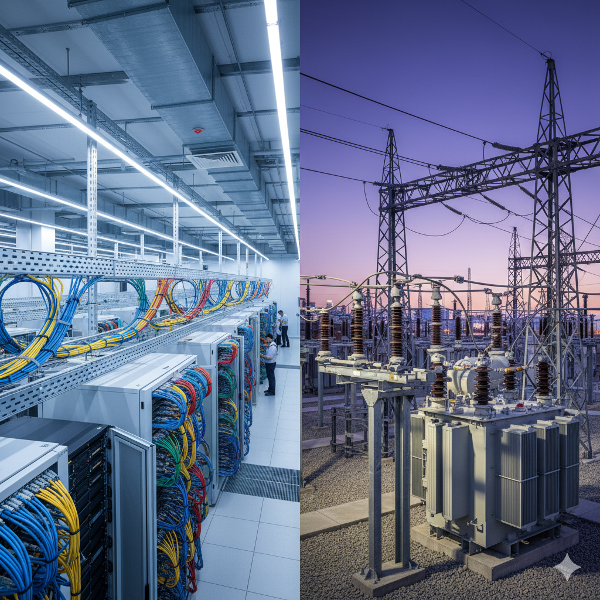
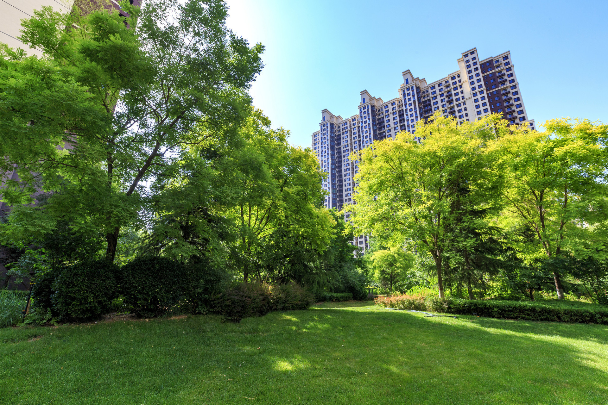
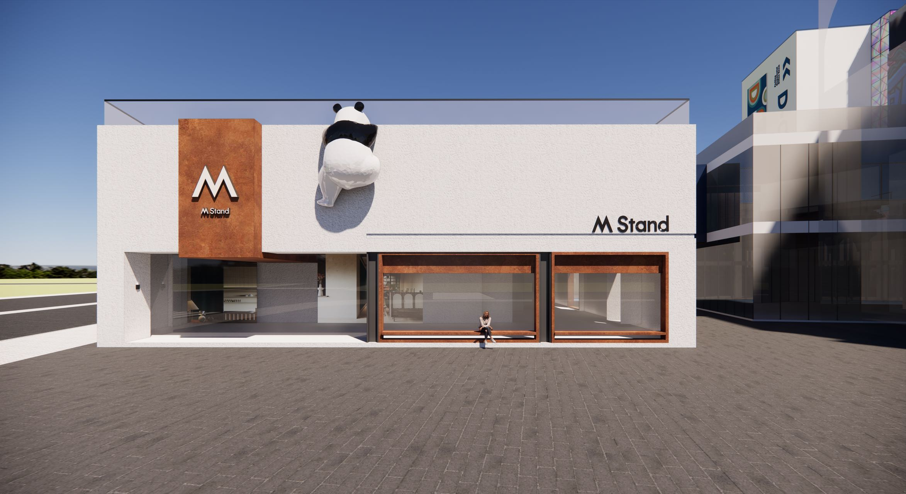
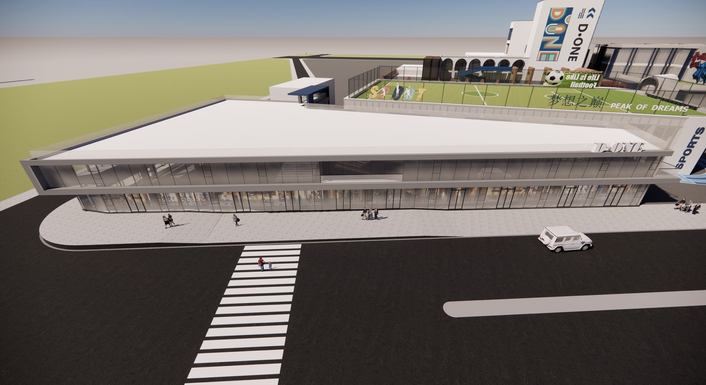
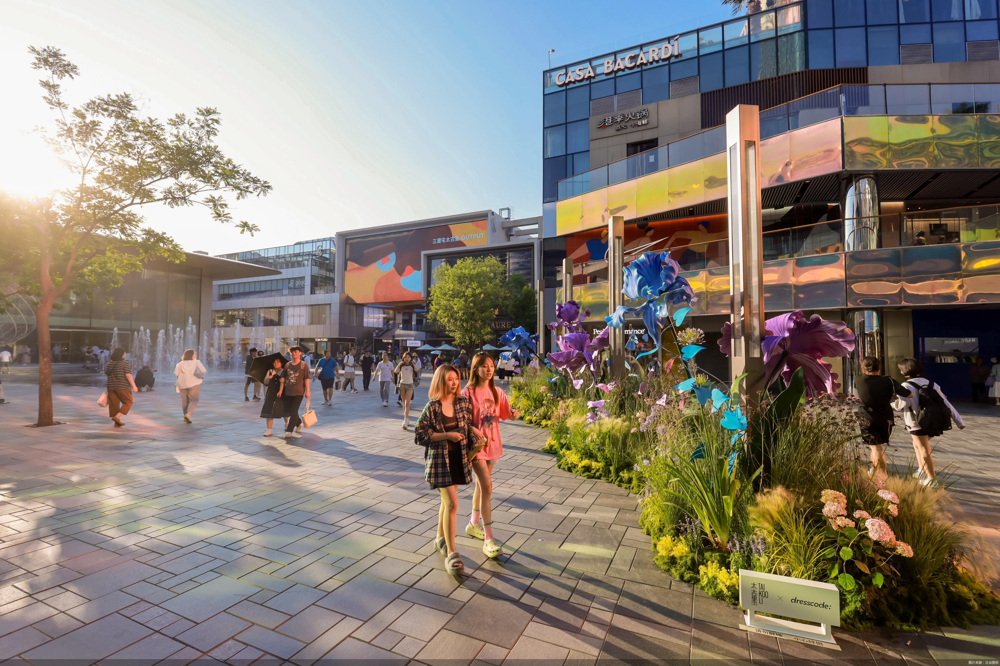

市政施工与城市更新专业服务商
中泓万城是一家专注于市政施工、城市更新运营与设计可视化的综合性工程服务商。公司拥有装饰装修工程二级资质、市政公用工程施工总承包三级资质、机电安装工程专业承包资质及安全生产许可证，形成了"设计-施工-运营"全链条服务能力。业务涵盖水、电、路、气、绿、排等市政配套工程，以及老旧小区改造、历史街区保护、商圈更新等城市更新项目，并提供建筑效果图与建筑动画等设计可视化服务。
了解中泓

市政施工 — 六大类工程解决方案
覆盖水、电、路、气、绿、排全链条市政配套服务
城市更新与运营案例精选

市政施工水系统模块建设
市政施工 - 水系统

老旧街区综合改造工程
城市更新 - 老旧街区改造

电力系统基础建设
市政施工 - 电系统

小区绿化改造工程
城市更新 - 人居环境改善

现代住宅建筑效果图设计
设计可视化 - 建筑设计

公共空间建筑可视化展示
设计可视化 - 效果图
城市更新与运营 — 四大核心方向
聚焦人居环境改善、经济业态升级、街区功能转换、历史文化保护，推动城市高质量发展
